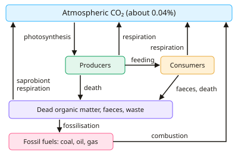

A-level Biology Year 13 · Topic 13
Ecological investigation and sustainability
Ecological investigation and sustainability brings together fieldwork, statistics and some of the biggest issues facing the planet.
We will follow carbon through the carbon cycle, learn how ecologists sample populations and investigate the distribution of species, and use statistical tests to analyse the results.
Then we look at the evidence for climate change and its effects on ecosystems, and how forests and fisheries can be managed sustainably.
- 6 subtopics
- 310 questions
- Free: 13.1 notes and 10 questions
In this topic
- 13.1The carbon cycleFree below · 39 questions
- 13.2Ecological sampling: random sampling, quadrats, transects and mark-release-recaptureOpen in Full Marks · 75 questions
- 13.3Practical: effect of an environmental factor on the distribution of a speciesOpen in Full Marks · 28 questions
- 13.4Statistical tests in ecology: Spearman's rank, t-test and Simpson's index of diversityOpen in Full Marks · 23 questions
- 13.5Climate change and its effects on ecosystemsOpen in Full Marks · 73 questions
- 13.6Sustainable management of ecosystems: forestry, fisheries and conservationOpen in Full Marks · 72 questions
13.1 · Free notes
The carbon cycle

Key points
- The carbon cycle moves carbon between reservoirs (stores), which are the atmosphere (CO₂ ≈ 0.04%), oceans, rocks, fossil fuels, soil and living organisms. The movements between them are called fluxes.
- Photosynthesis by producers fixes CO₂ into organic compounds (carbohydrates, lipids, proteins). This removes CO₂ from the atmosphere or from water.
- Carbon passes along food chains as organic compounds when consumers feed. Respiration in producers, consumers and decomposers returns CO₂ to the atmosphere.
- Saprobionts (decomposer bacteria and fungi) secrete extracellular enzymes to digest dead organisms, faeces and waste. They absorb the soluble products and respire, releasing CO₂ and recycling nutrients.
- Where decay is slow (anaerobic, waterlogged, acidic or cold conditions), dead plant material accumulates as peat. Over millions of years heat and pressure turn buried remains into fossil fuels (coal, oil, gas), a long-term carbon store.
- Combustion of fossil fuels and biomass rapidly returns stored carbon to the atmosphere as CO₂. Deforestation also reduces photosynthetic uptake, so atmospheric CO₂ rises.
- Methane is produced by methanogenic archaea in anaerobic conditions (wetlands, rice paddies, guts of ruminants). It is a potent greenhouse gas but present at a much lower concentration than CO₂.
- Oceans absorb CO₂, which forms hydrogencarbonate ions and H⁺ and so lowers pH (ocean acidification). Marine organisms use carbonate to build shells, which become limestone over geological time.
- Greenhouse gases (CO₂, methane, water vapour) absorb long-wave infrared radiation re-emitted from Earth's surface and radiate some back. This reduces heat loss, so the enhanced greenhouse effect causes global warming.
- The Keeling curve (Mauna Loa) shows atmospheric CO₂ rising from about 315 ppm (1958) to over 420 ppm. The annual zigzag reflects seasonal photosynthesis in the northern hemisphere. Percentage change = (final − initial) ÷ initial × 100.
- Consequences of climate change include melting ice, sea-level rise, extreme weather and shifts in species distribution and breeding times. Evidence from ice cores, tree rings and pollen shows a correlation between CO₂ and temperature, but correlation alone does not prove causation.
- Mitigation includes reducing fossil fuel use, afforestation, protecting peat bogs and using biofuels. Biofuels are only approximately carbon neutral, because growing, processing and transporting them uses fossil fuels.
In more detail
- Peat and fossil fuels: in waterlogged, acidic or cold conditions saprobionts cannot fully decompose dead material, so carbon is locked away as peat, and over millions of years as coal, oil and gas.
- Seasonal fluctuations in the Keeling curve: CO₂ falls in the northern summer when photosynthesis is high and rises in winter when respiration and decay exceed photosynthesis.
- Methane potency: methane traps much more heat per molecule than CO₂, although it stays in the atmosphere for a shorter time.
- Ocean acidification: lower pH makes it harder for corals, molluscs and plankton to build calcium carbonate shells and skeletons.
Practice
The carbon cycle: 10 questions
Pick an answer to check it, or open the answer for the explanation.
1. Which process transfers carbon from the atmosphere into organic compounds in producers?
- Respiration
- Photosynthesis
- Decomposition
- Combustion
Show answer
B: Photosynthesis. Photosynthesis fixes carbon dioxide into organic compounds such as glucose, starch and cellulose. The other three processes release CO₂ to the atmosphere.
2. How do saprobionts return carbon from dead organisms to the atmosphere?
- Secrete enzymes, absorb the products, then respire and release CO₂
- They convert dead matter directly into fossil fuels
- They photosynthesise using carbon from dead matter
- They ingest dead matter and store the carbon in shells
Show answer
A: Secrete enzymes, absorb the products, then respire and release CO₂. Saprobionts digest dead material externally using extracellular enzymes, absorb the soluble products and release CO₂ through respiration.
3. Peat accumulates in waterlogged bogs mainly because:
- Bog plants photosynthesise faster than other plants
- Low oxygen and acidity slow decomposition by saprobionts
- Saprobionts are killed by high CO₂ concentrations
- Carbon in bog plants cannot be respired
Show answer
B: Low oxygen and acidity slow decomposition by saprobionts. Waterlogged, acidic, anaerobic conditions inhibit saprobionts. Dead plant material is only partly decomposed, so its carbon is stored as peat.
4. Which source produces methane, a greenhouse gas, in the carbon cycle?
- Methanogenic archaea in anaerobic conditions such as rice paddies
- Photosynthesis in marine algae
- Saprobionts respiring aerobically in dry soil
- Complete combustion of fossil fuels
Show answer
A: Methanogenic archaea in anaerobic conditions such as rice paddies. Methanogenic archaea produce methane in anaerobic environments such as wetlands, rice paddies and the guts of ruminants.
5. How do greenhouse gases such as CO₂ and methane cause global warming?
- They increase the rate of respiration in the oceans
- They absorb ultraviolet light so it cannot reach the surface
- They absorb long-wave infrared from Earth and re-radiate some back
- They reflect incoming visible light back into space
Show answer
C: They absorb long-wave infrared from Earth and re-radiate some back. These gases absorb infrared radiation emitted by Earth's surface and re-emit some of it back, reducing heat loss to space and warming the lower atmosphere.
6. The Mauna Loa CO₂ record shows a yearly zigzag on a rising trend. What explains the fall in CO₂ each northern summer?
- Increased respiration by saprobionts in warm soil
- Fewer fossil fuels are burned in summer
- Greater photosynthesis by northern hemisphere vegetation
- Oceans release CO₂ as they cool
Show answer
C: Greater photosynthesis by northern hemisphere vegetation. Northern hemisphere land holds most vegetation. In spring and summer, photosynthesis removes more CO₂ than respiration releases, so concentration dips.
7. Atmospheric CO₂ rose from 315 ppm in 1958 to 420 ppm in 2023. What is the percentage increase?
- 75%
- 25%
- 33%
- 105%
Show answer
C: 33%. (420 − 315) ÷ 315 × 100 = 33.3%. A value of 25% comes from dividing by the final value, and 105 is the absolute rise in ppm.
8. CO₂ concentration rose from 315 ppm to 420 ppm over 65 years. What is the mean rate of increase?
- 6.5 ppm per year
- 0.6 ppm per year
- 105 ppm per year
- 1.6 ppm per year
Show answer
D: 1.6 ppm per year. Rise = 420 − 315 = 105 ppm. Rate = 105 ÷ 65 = 1.6 ppm per year.
9. Which statement about burning biofuels made from crops is most accurate?
- Not fully carbon neutral: farming and processing use fossil fuels
- They release carbon fixed millions of years ago
- They absorb CO₂ from the air as they burn
- They release no CO₂ when burned
Show answer
A: Not fully carbon neutral: farming and processing use fossil fuels. Burning biofuel releases CO₂ that the crop recently fixed, so it is roughly carbon neutral. Fossil fuels used in growing, processing and transport mean it is not fully neutral.
10. Why does increased atmospheric CO₂ threaten marine organisms that make calcium carbonate shells?
- More dissolved CO₂ lowers pH, reducing carbonate ions for shells
- More CO₂ raises ocean pH, dissolving shells
- CO₂ stops all marine photosynthesis
- Warmer water holds more dissolved CO₂
Show answer
A: More dissolved CO₂ lowers pH, reducing carbonate ions for shells. Dissolved CO₂ forms carbonic acid and H⁺, lowering ocean pH (acidification). This reduces the carbonate ions available for shell formation.
Keep going in Full Marks
Full Marks has 39 questions on The carbon cycle (29 more than here), set out in practice levels. You also get notes and 3D models for all 6 subtopics of Ecological investigation and sustainability, plus games, timed exams and past papers.